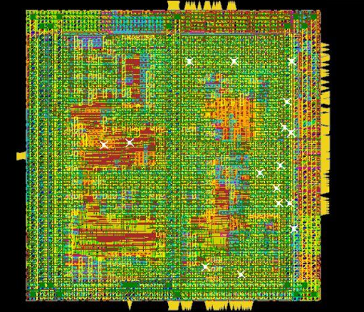

This project is based on the open-source PicoRV32 core in Verilog. It includes the physical design of the processor, floorplanning, timing, and DFT. The tools used are Cadence Genus and Innovus.
All technical information can be found in the GitHub repository below.